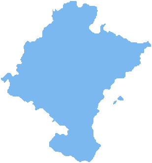
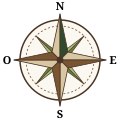
¡A SUBIR EL NÚMERO!
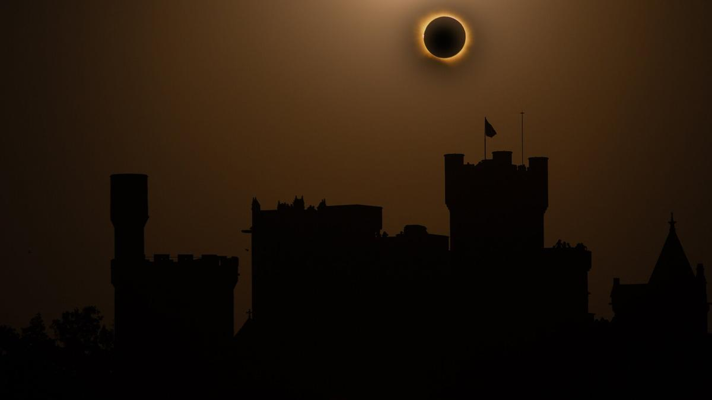
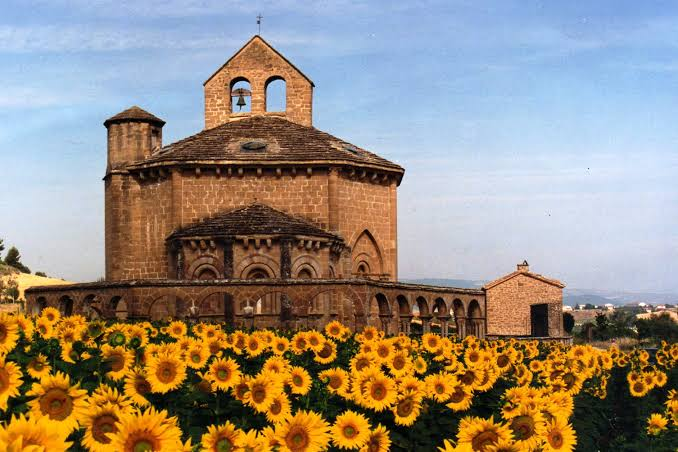
Todavía no hay excursiones en esta categoría.
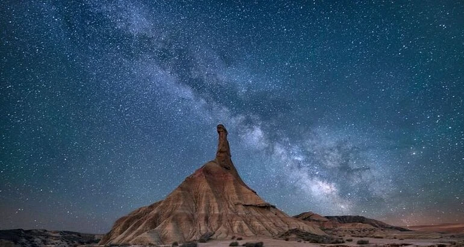
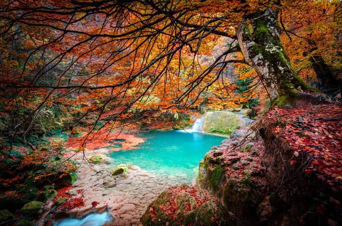
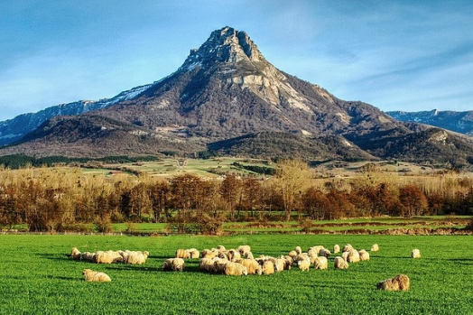
Todavía no hay excursiones en esta categoría.
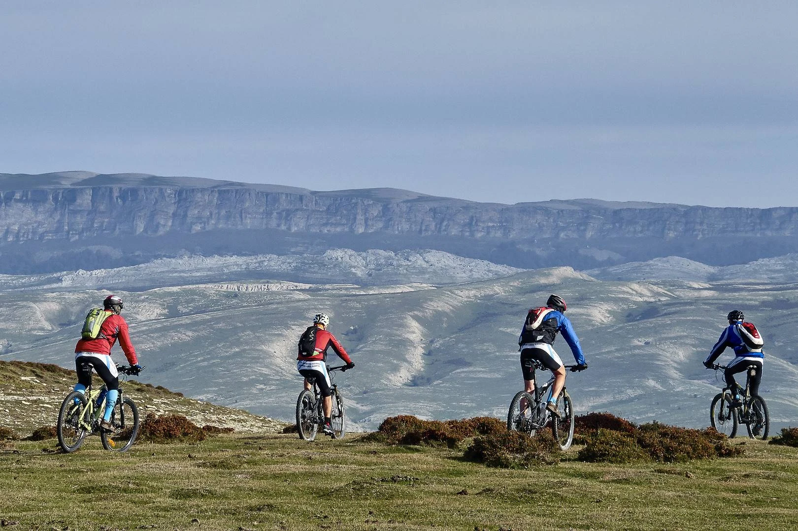
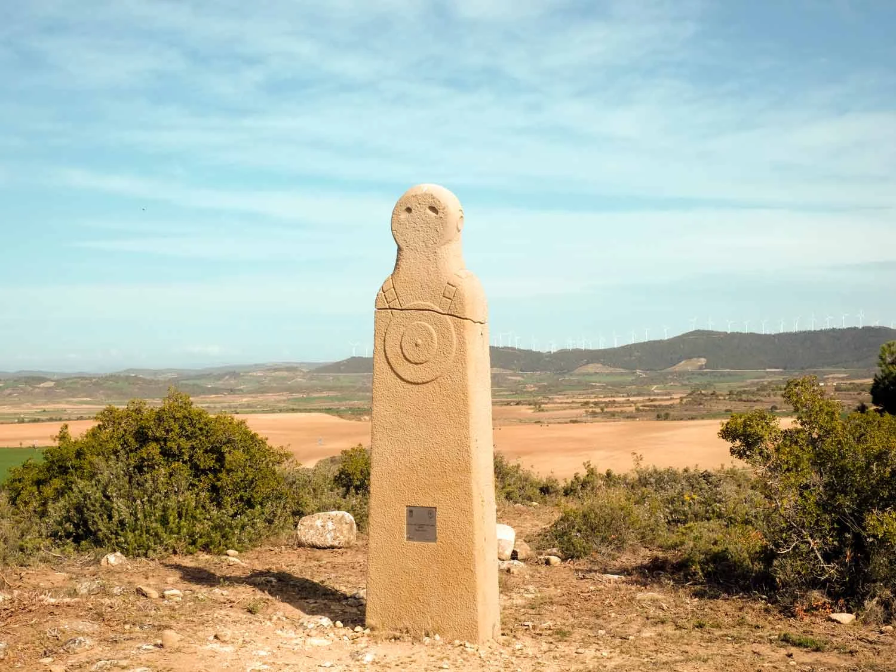
Todavía no hay excursiones en esta categoría.
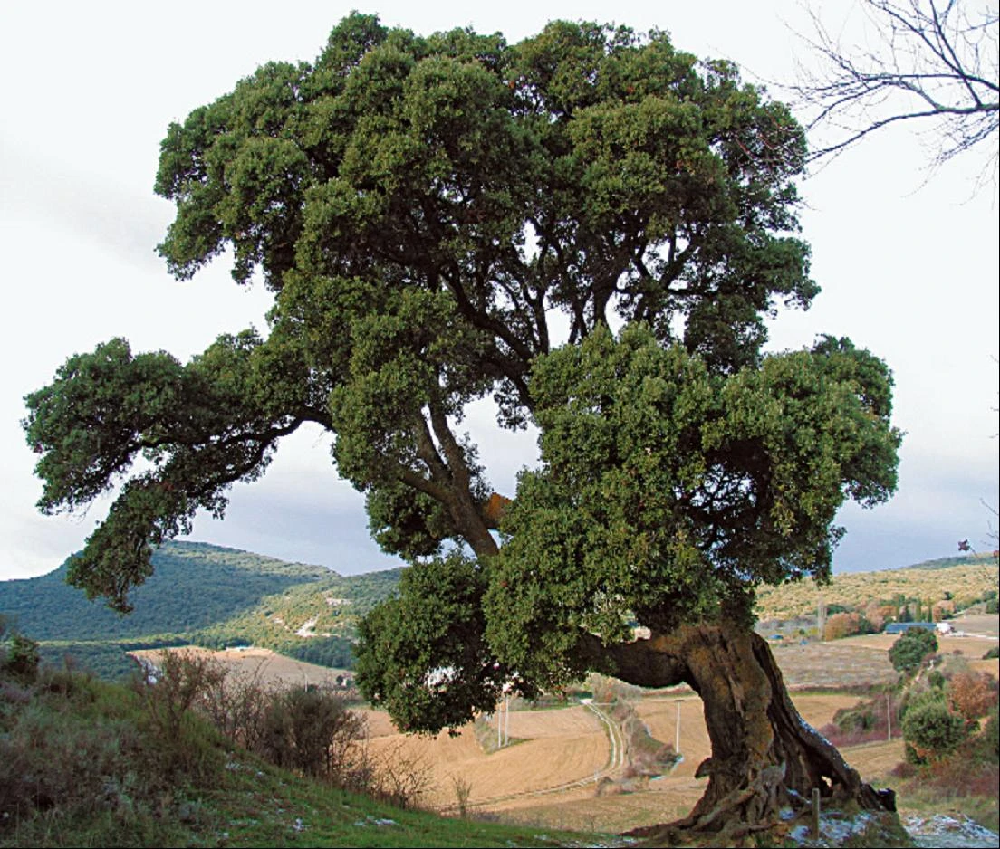
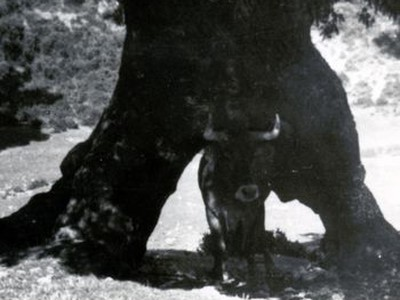
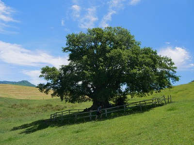
Todavía no hay excursiones en esta categoría.
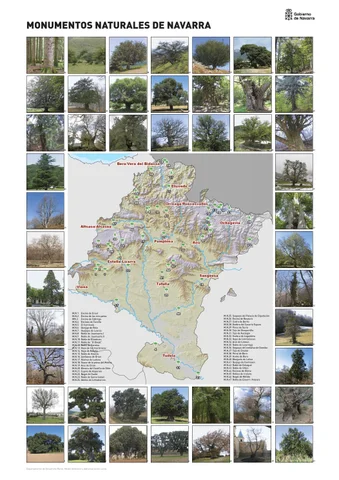
Bienvenido/a a la web oficial de La Lista de excursiones por Navarra y cercanías o lejanías. En esta web encontrarás todos los paseos, montes, montañas, pueblos y lugares que se deben conocer por la región. El objetivo de La Lista y de esta web es fomentar la total compleción de las excursiones a los puntos enumerados en ella. En caso de completarse, será oficial y legítimo decir que se conoce la zona de manera total y absoluta. Sin más que añadir, ¡suerte y disfrutad perdiéndoos en las aventuras y excursiones y caminos de Navarra y compañía!
«Ad Astra»
«Audentes fortuna iuvat»
CÓMO USAR LA WEB
- Busca la excursión que desees en la categoría correspondiente.
- Pincha en ella y observa sus datos de ruta, distancia a Pamplona en coche y ubicación en Google Maps.
- Si la excursión no tiene enlace a Wikiloc, no fiarse del kilometraje de la ruta; si lo tiene, mirarlo para la ruta.
- Ir a la excursión y hacerla.
- Marcarla como completada en esta web.
- Repetir.
WEBS INTERESANTES
- Monumentos Naturales de Navarra, por Javier Colomo Fichas, fotos, coordenadas y mapas de cada árbol ↗
- Rutas Navarra / Napar Bideak Buscador de rutas por zona, dificultad, distancia y desnivel ↗
- Navarrincón: excursiones para niños en Navarra Cuevas, cascadas, dólmenes y paseos para ir en familia ↗
- Mis escapadas por Navarra Listado completo de rutas senderistas ↗
- Rutas de Paisajes Enogastronómicos Las cinco rutas a pie o en bici del Gobierno de Navarra, en Visit Navarra ↗
- Visit Navarra Web oficial de turismo de Navarra ↗
TIEMPO: PREDICCIÓN 7 DÍAS
EL RELOJ DE SANFERMINES
Faltan para el chupinazo (6 de julio, 12:00)
¡Estamos en Sanfermines! ¡Gora San Fermín!
El reloj de San Fermín (sanfermin.com) Historia del reloj de la calle Estafeta ↗GUÍA DE CAMPO BÁSICA
ÁRBOLES: LAS 25 ESPECIES MÁS RELEVANTES
-
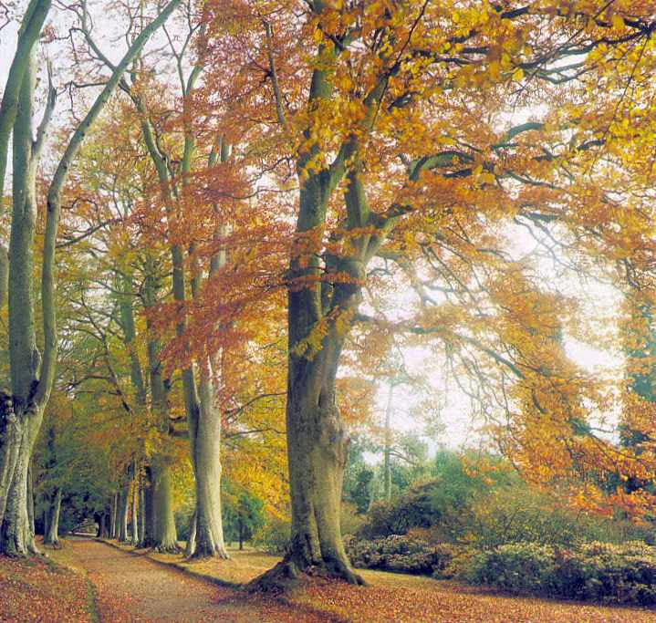
Haya
Fagus sylvatica
Tronco liso y gris plateado y hojas ovaladas de borde ondulado, que en otoño se vuelven cobrizas. Forma los hayedos húmedos y sombríos del norte de Navarra y del Pirineo, como Irati, Urbasa o Aralar. Su fruto es el hayuco.
-
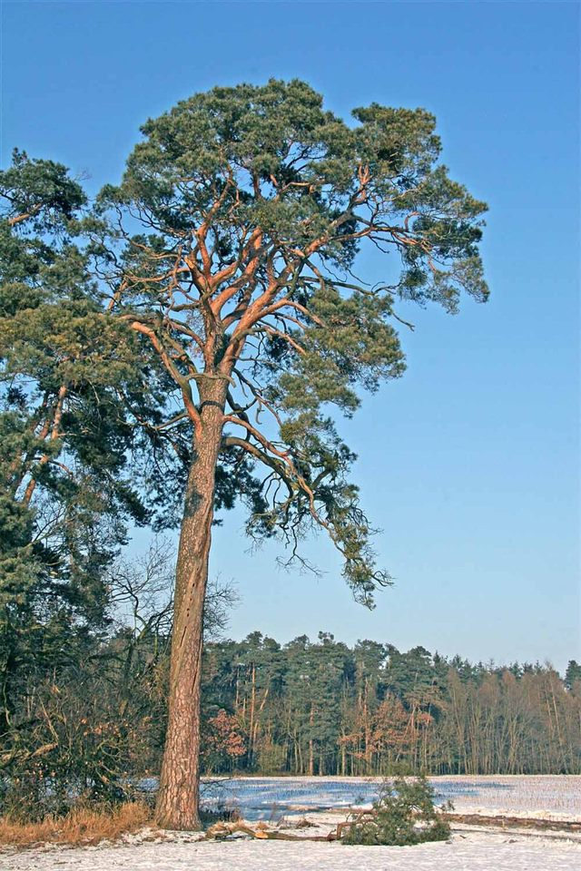
Foto: Zp (Wikipedia en checo) · CC BY-SA 3.0 · Wikimedia Commons Pino silvestre (o albar)
Pinus sylvestris
Se reconoce por la corteza anaranjada de la parte alta del tronco y las ramas. Sus acículas son cortas, van de dos en dos y tienen un tono verde azulado. Abunda en el Pirineo y en las sierras de la Zona Media, a menudo mezclado con hayas.
-
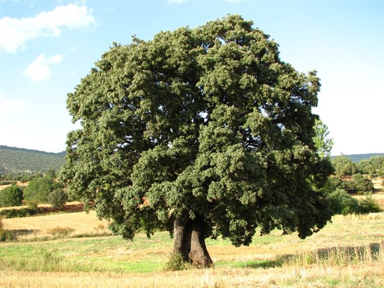
Foto: Picamaderos · CC BY-SA 3.0 · Wikimedia Commons Encina (o carrasca)
Quercus ilex
Árbol de hoja perenne, dura y pequeña, verde oscura por arriba y grisácea por debajo, a veces con el borde pinchudo. Aguanta muy bien la sequía y forma encinares en la Zona Media y la Ribera. Da bellotas.
-
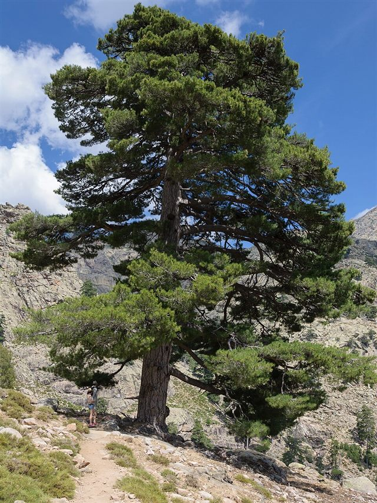
Foto: Myrabella · CC BY-SA 4.0 · Wikimedia Commons Pino laricio (o negral)
Pinus nigra
Pino de corteza gris oscura, agrietada en placas, y acículas largas, rígidas y de un verde muy oscuro. Vive en laderas calizas de montaña media y se ha plantado mucho en Navarra en repoblaciones.
-
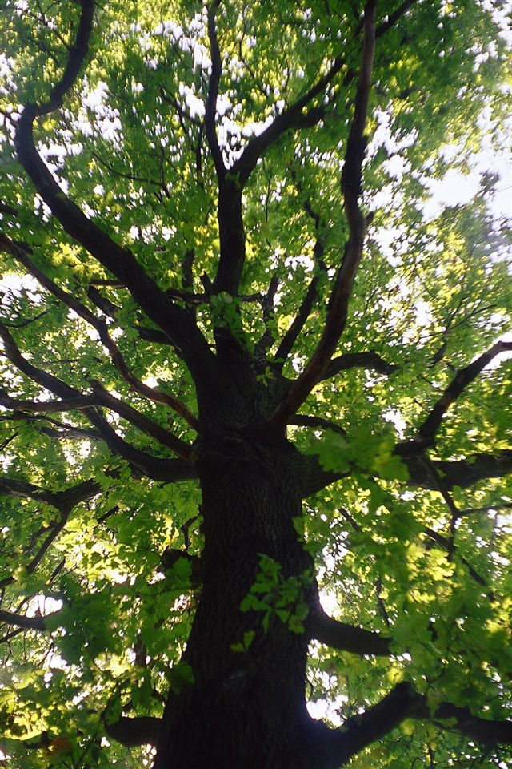
Foto: Stefanst (Wikipedia en inglés) · CC BY 2.5 · Wikimedia Commons Roble (común y albar)
Quercus robur y Quercus petraea
Grandes robles de hoja caduca con lóbulos redondeados. Para distinguirlos: el común tiene las bellotas colgando de un rabillo largo y las hojas casi sin rabillo; el albar, al revés. Forman robledales en los valles atlánticos del norte de Navarra.
-
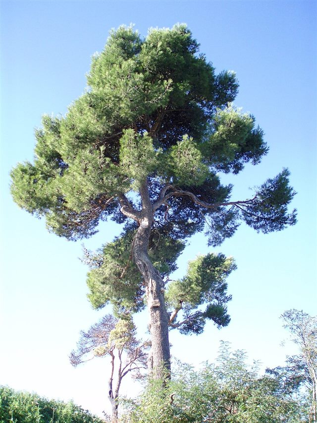
Foto: Accurimbono · CC BY-SA 3.0 · Wikimedia Commons Pino carrasco
Pinus halepensis
Pino mediterráneo de copa clara e irregular, corteza gris y acículas finas de verde claro. Es el pino que mejor soporta la sequía y el calor: típico del sur de Navarra, la Ribera y las Bardenas.
-
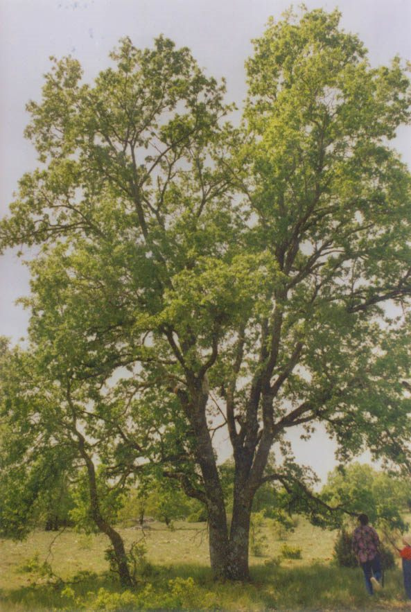
Foto: Carlosblh · CC BY-SA 3.0 · Wikimedia Commons Quejigo
Quercus faginea
Roble mediterráneo de hojas pequeñas y dentadas, verde grisáceo por debajo, que se secan en invierno pero se quedan en el árbol hasta la primavera. Frecuente en la Zona Media y el Prepirineo, entre los encinares y los robledales.
-
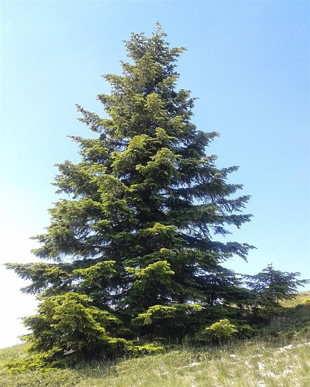
Foto: WikiCecilia · CC BY-SA 4.0 · Wikimedia Commons Abeto blanco
Abies alba
Conífera alta de copa cónica. Sus acículas son planas, con dos líneas blancas por debajo, y sus piñas crecen hacia arriba sobre las ramas. En Navarra vive en el Pirineo (Irati, Roncal, Belagua), a menudo mezclado con hayas.
-
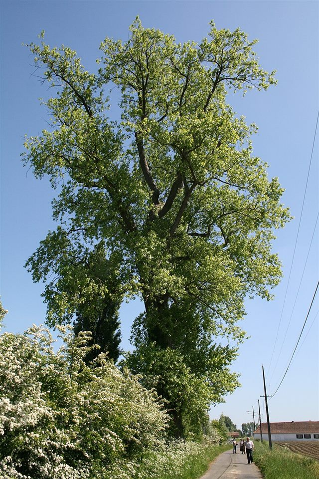
Foto: Jean-Pol Grandmont · CC BY 3.0 · Wikimedia Commons Chopo (o álamo negro)
Populus nigra
Árbol de ribera alto y de crecimiento rápido, con hojas triangulares que tiemblan con el viento. Acompaña a ríos como el Ebro, el Aragón o el Arga. En primavera suelta una pelusa blanca que lleva sus semillas.
-
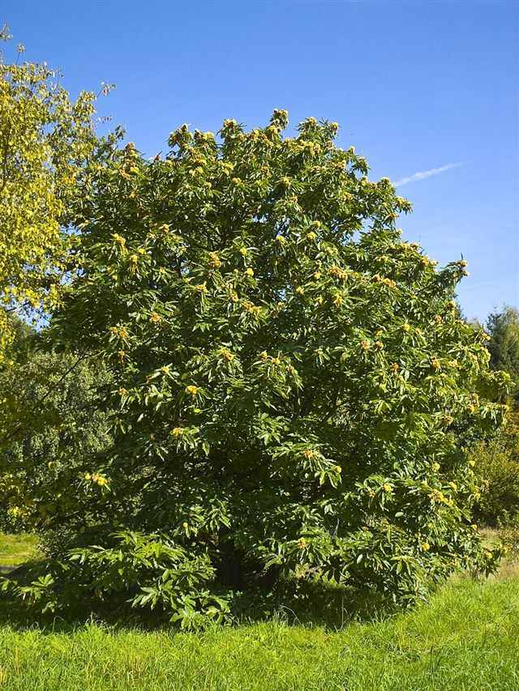
Foto: Willow · CC BY 2.5 · Wikimedia Commons Castaño
Castanea sativa
Hojas largas y estrechas con el borde en dientes de sierra. Su fruto, la castaña, crece dentro de un erizo lleno de pinchos. Prefiere suelos ácidos y húmedos: en Navarra se encuentra sobre todo en el norte, en Baztan, Bortziriak y Malerreka.
-
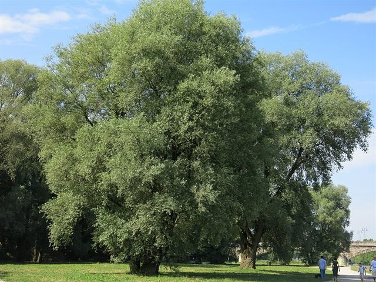
Foto: Burkhard Mücke · CC BY-SA 4.0 · Wikimedia Commons Sauce (blanco)
Salix alba
Árbol de ribera de hojas largas y estrechas, verdes por arriba y plateadas por debajo, que dan a la copa un brillo blanquecino. Sus ramas son muy flexibles. Crece junto a ríos y acequias de toda Navarra, a menudo junto a los chopos.
-
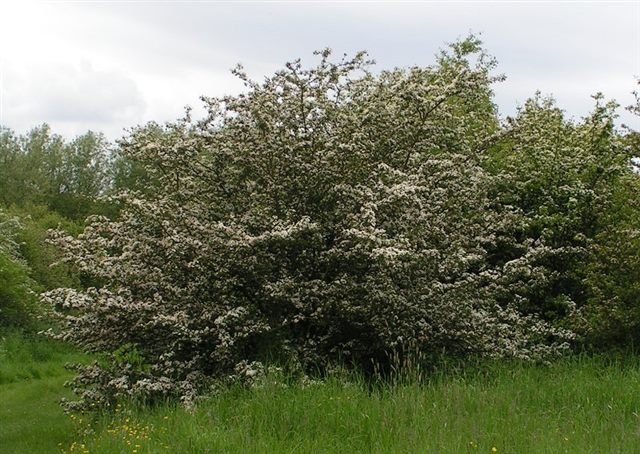
Foto: EugeneZelenko · CC BY-SA 3.0 · Wikimedia Commons Espino (albar)
Crataegus monogyna
Arbolillo espinoso de hojas pequeñas y muy recortadas. En primavera se cubre de flores blancas y en otoño de frutos rojos, los majuelos. Es muy común en setos, linderos y bordes de bosque de toda Navarra.
-
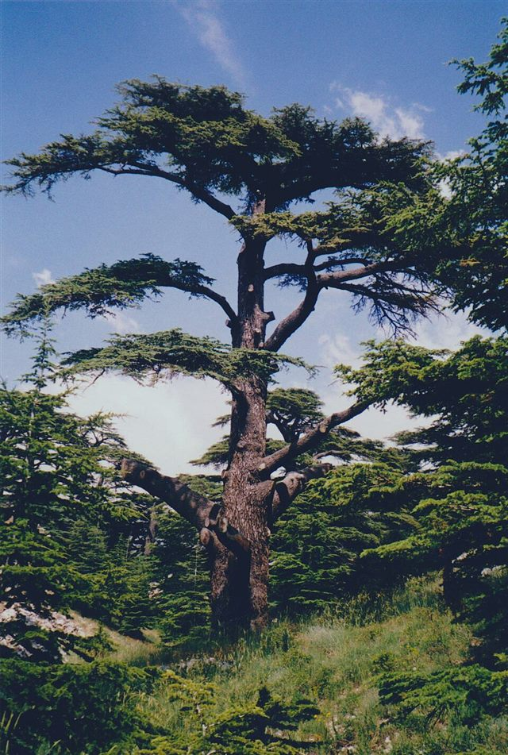
Foto: DIMSFIKAS (Wikipedia en griego) · CC BY-SA 3.0 · Wikimedia Commons Cedro (del Líbano)
Cedrus libani
Conífera de gran porte con las ramas extendidas en pisos horizontales, acículas cortas agrupadas en rosetas y piñas erguidas en forma de barril. No es autóctono: se plantó en jardines y palacios. El Cedro de Bértiz es Monumento Natural.
-
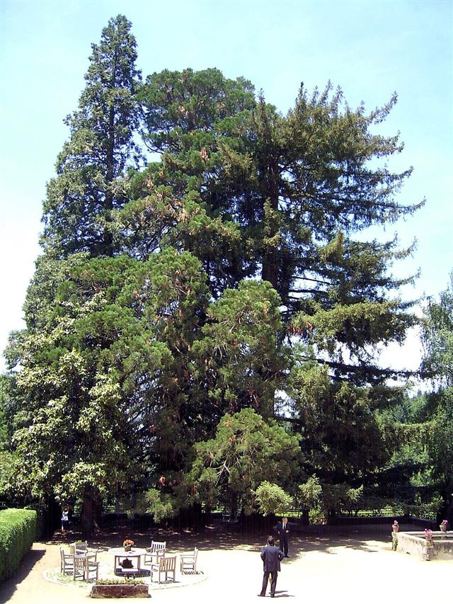
Foto: Friviere · CC BY-SA 3.0 · Wikimedia Commons Secuoya (gigante)
Sequoiadendron giganteum
Conífera de California que alcanza tamaños enormes, con la corteza rojiza, gruesa y esponjosa y la copa cónica. En Navarra solo está plantada en parques y jardines; la del Palacio de Navarra, en Pamplona, es Monumento Natural.
-
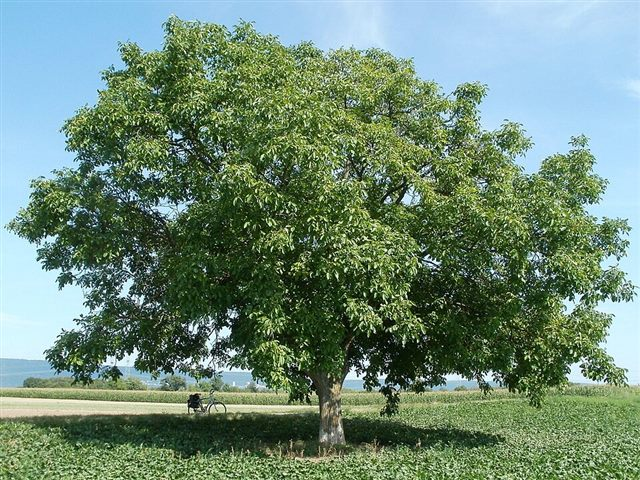
Foto: AnRo0002 · CC0 (dominio público) · Wikimedia Commons Nogal
Juglans regia
Árbol de copa ancha y redondeada con hojas compuestas que huelen al frotarlas. Su fruto es la nuez, dentro de una cáscara verde. Se ha plantado desde antiguo junto a casas, huertas y caminos; los nogales de Garde y de Mélida son Monumentos Naturales.
-
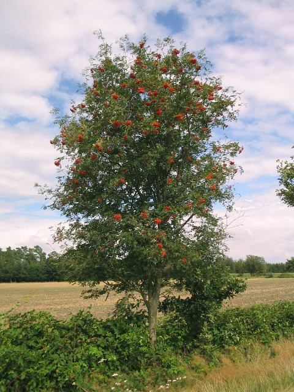
Foto: Field Researcher (Wikipedia en alemán) · Dominio público · Wikimedia Commons Serbal de cazadores
Sorbus aucuparia
Árbol pequeño de hojas compuestas, como plumas, con racimos de frutos rojo anaranjado a finales de verano y en otoño que atraen a las aves (de ahí su nombre: se usaban como cebo). Vive en los bosques de montaña del norte y del Pirineo, entre hayas y abetos.
-
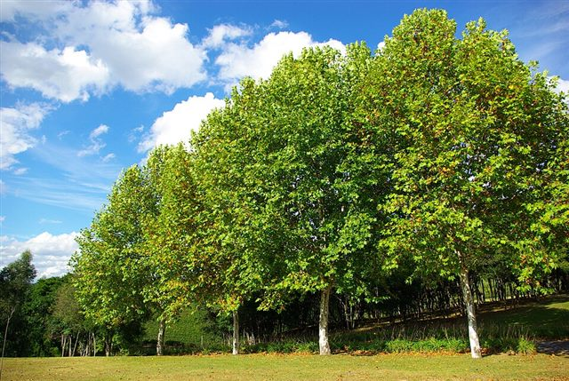
Foto: Tiago Fioreze · CC BY-SA 3.0 · Wikimedia Commons Plátano de sombra (o platanero de ciudad)
Platanus × hispanica
El árbol de las calles y paseos: hojas grandes parecidas a las del arce, corteza que se desprende en placas y deja manchas verdes y grises, y frutos en bolitas colgantes. Se planta mucho en ciudades como Pamplona por la sombra que da.
-
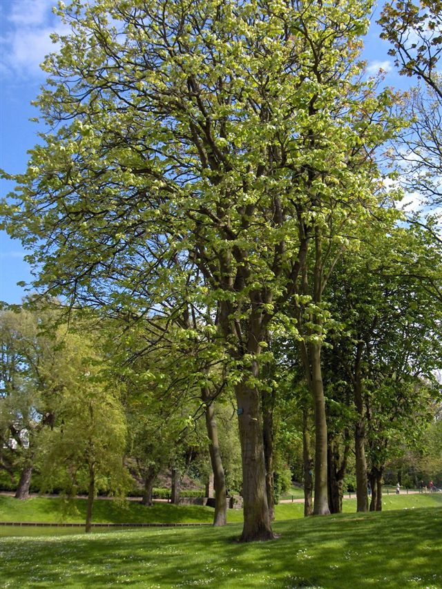
Foto: JoJan · CC BY-SA 3.0 · Wikimedia Commons Tilo
Tilia platyphyllos
Árbol de copa amplia con hojas en forma de corazón y flores amarillentas muy perfumadas a principios de verano, con las que se prepara la tila. Crece en bosques frescos y barrancos, y se planta en plazas y paseos.
-
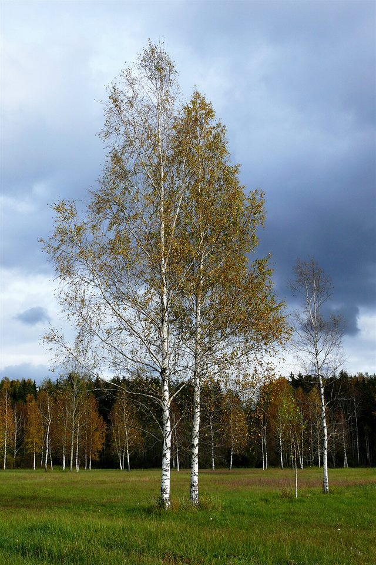
Foto: Ege Jüris · CC BY-SA 3.0 · Wikimedia Commons Abedul
Betula pendula
Árbol esbelto de corteza blanca con manchas negras, ramillas finas y colgantes y hojas pequeñas y triangulares que amarillean en otoño. Coloniza claros y bordes de bosque en las zonas frescas del norte de Navarra y del Pirineo.
-
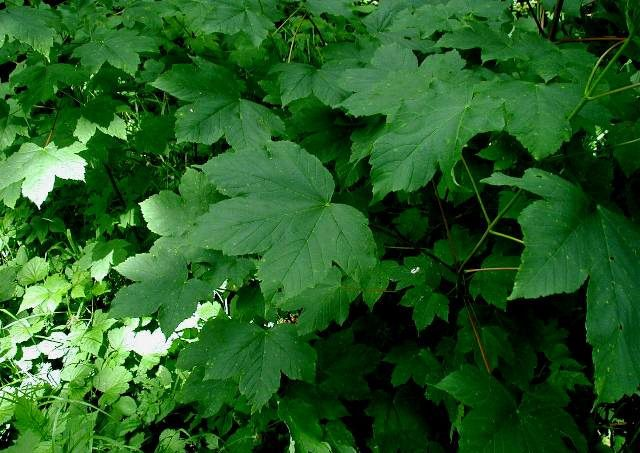
Foto: JoJan · CC BY-SA 3.0 · Wikimedia Commons Arce mayor
Acer pseudoplatanus
Árbol grande de hojas anchas con cinco lóbulos, parecidas a las del plátano de sombra, y frutos con dos alas que caen girando como hélices. Vive en bosques frescos y húmedos del norte de Navarra y del Pirineo, a menudo con hayas y fresnos, y también se planta en paseos.
-
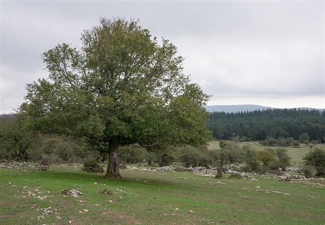
Foto: Basotxerri · CC BY-SA 4.0 · Wikimedia Commons Arce menor
Acer campestre
Arce pequeño, a veces casi un arbusto, de hojas pequeñas con lóbulos redondeados que en otoño se vuelven amarillas. Sus frutos alados forman casi una línea recta. Es común en setos, linderos y bosques mixtos de la Zona Media y del norte.
-
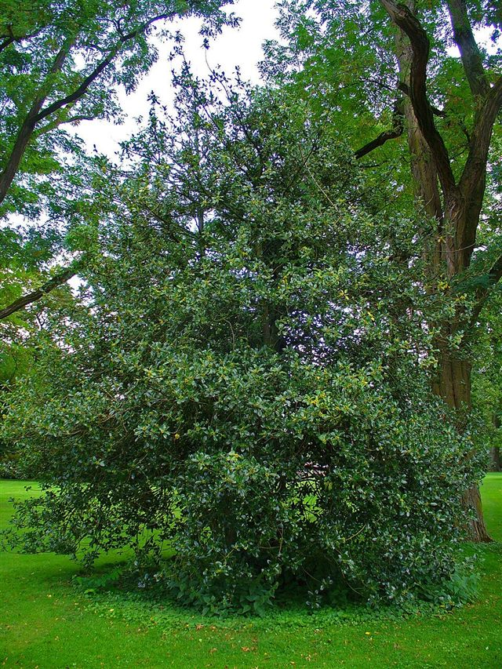
Foto: H. Zell · CC BY-SA 3.0 · Wikimedia Commons Acebo
Ilex aquifolium
Árbol o arbusto de hoja perenne, dura y brillante, con el borde espinoso, y bolitas rojas en invierno (solo en los pies hembra). Vive bajo hayedos y robledales del norte y del Pirineo. En muchos lugares está protegido: no se debe cortar.
-
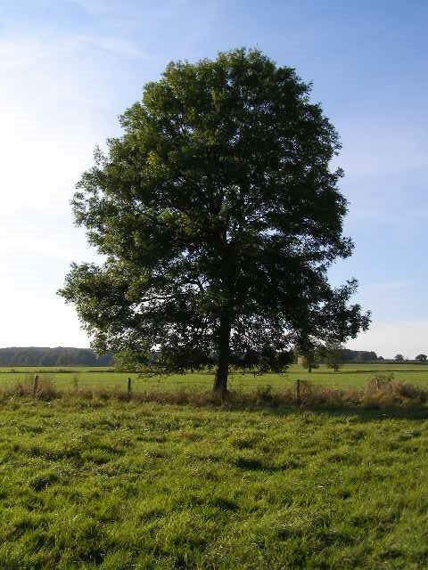
Foto: Brian Green · CC BY-SA 2.0 · Wikimedia Commons Fresno
Fraxinus excelsior
Árbol alto de corteza gris y hojas compuestas de muchos foliolos dentados; en invierno se reconoce por sus yemas negras. Le gustan los suelos húmedos: orillas de ríos, prados y setos del norte de Navarra, donde se ha usado mucho como forraje.
-
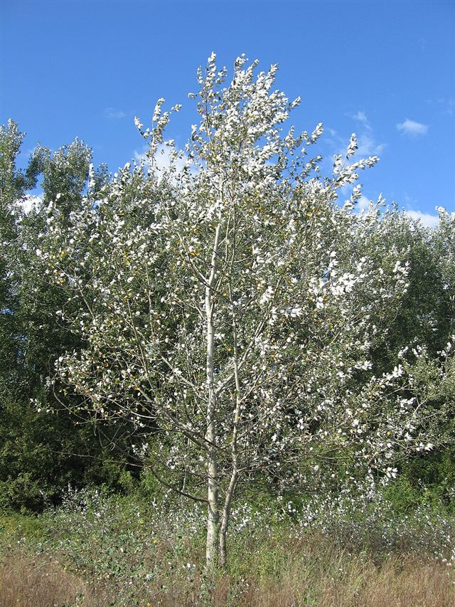
Foto: La la means I love you · CC BY-SA 3.0 · Wikimedia Commons Álamo blanco
Populus alba
Árbol de ribera de corteza blanquecina y hojas verdes por arriba y blancas y algodonosas por debajo, que hacen brillar la copa con el viento. Es frecuente en los sotos del Ebro, el Aragón y la Ribera. Los Álamos de Lodosa son Monumento Natural.
-
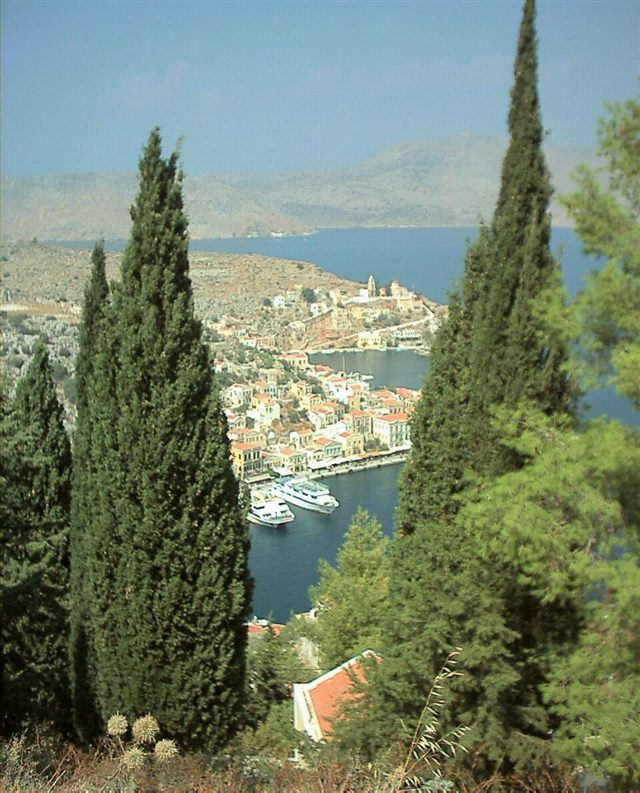
Foto: Wojsyl · CC BY-SA 3.0 · Wikimedia Commons Ciprés
Cupressus sempervirens
Conífera de copa estrecha y alargada, como una llama, con hojitas en forma de escama y piñas redondas. No es autóctona de Navarra: se planta en cementerios, ermitas y jardines.
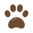
MAMÍFEROS: LOS 16 MÁS IMPORTANTES DE NAVARRA
-
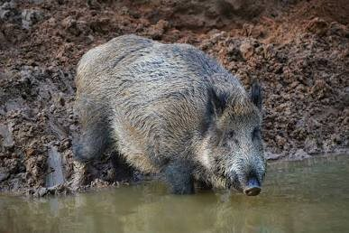
Jabalí
Sus scrofa
Cerdo salvaje de pelaje áspero y oscuro, hocico alargado y, en los machos, colmillos que asoman de la boca. Vive en casi todos los bosques y matorrales de Navarra. Es sobre todo nocturno; su rastro más común es la tierra removida al buscar raíces y bellotas.
-
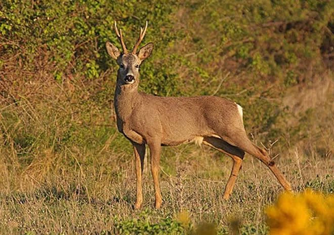
Corzo
Capreolus capreolus
El cérvido más pequeño: pardo rojizo en verano y grisáceo en invierno, con una mancha blanca en el trasero. Los machos tienen cuernas cortas de tres puntas. Frecuente en bosques y bordes de prados de toda Navarra; al anochecer se oye su ladrido ronco.
-
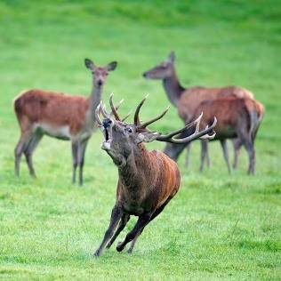
Ciervo
Cervus elaphus
Gran cérvido de pelaje pardo. Los machos lucen grandes cuernas ramificadas que pierden y renuevan cada año. En otoño celebran la berrea, con bramidos que se oyen a kilómetros. En Navarra vive sobre todo en los bosques del Pirineo y del norte, como Irati o Quinto Real.
-
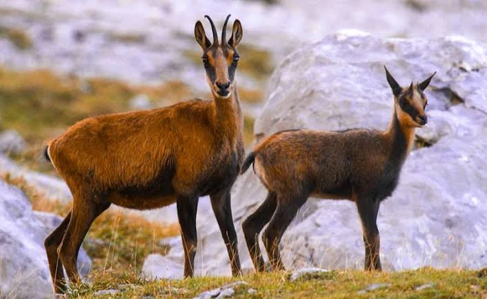
Sarrio
Rupicapra pyrenaica
El rebeco del Pirineo: ágil «cabra» de montaña con cuernos cortos curvados en gancho y una máscara oscura en la cara. Vive en roquedos y pastos de alta montaña; en Navarra, en el Pirineo de Roncal, con Belagua y Larra como mejores lugares para verlo.
-
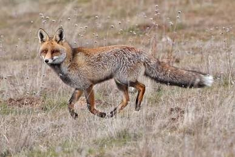
Zorro rojo
Vulpes vulpes
Pelaje rojizo, orejas grandes y una cola larga y peluda con la punta blanca. Es muy adaptable: vive desde los montes del Pirineo hasta los cultivos de la Ribera y las afueras de los pueblos.
-
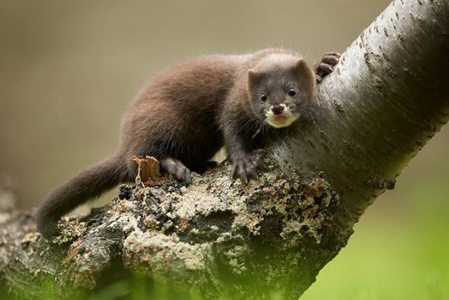
Visón europeo
Mustela lutreola
Pequeño mustélido de pelaje pardo oscuro con los labios blancos. Está en grave peligro de extinción, y Navarra guarda una de sus mejores poblaciones, en los ríos y sotos del Ebro, el Aragón y el Arga.
-
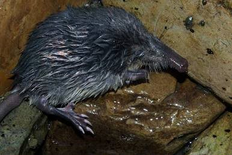
Desmán de los Pirineos
Galemys pyrenaicus
Pequeño mamífero acuático con una trompa alargada y móvil y las patas traseras palmeadas. Vive en arroyos de aguas limpias, frías y rápidas del norte de Navarra y del Pirineo. Es muy escaso y difícil de ver.
-
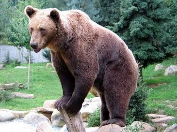
Oso pardo
Ursus arctos
El mayor carnívoro de la península. En Navarra solo aparecen algunos ejemplares de paso por el Pirineo (Roncal y Belagua), que vienen de la población pirenaica reintroducida.
-
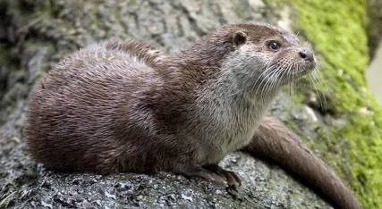
Nutria
Lutra lutra
Mustélido de cuerpo alargado, pelaje pardo impermeable y cola gruesa; gran nadadora. Se ha recuperado en muchos ríos navarros, aunque es más fácil encontrar sus huellas y excrementos en las piedras de la orilla que verla a ella.
-
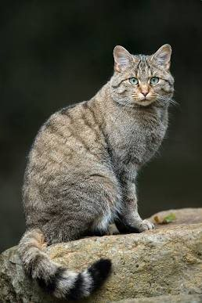
Gato montés
Felis silvestris
Parecido a un gato atigrado, pero más robusto y con la cola gruesa, anillada en negro y acabada en punta roma negra. Vive en bosques y matorrales tranquilos y es muy esquivo.
-
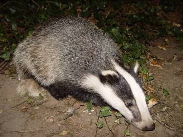
Tejón
Meles meles
Mustélido robusto de pelaje gris con la cara blanca cruzada por dos franjas negras. Vive en madrigueras (tejoneras) en bosques y setos, y sale de noche a buscar lombrices, frutos e insectos.
-
Gineta
Genetta genetta
Cuerpo esbelto, pelaje gris claro con manchas negras y una cola muy larga anillada en blanco y negro. Es nocturna y buena trepadora; vive en bosques, sotos y matorrales.
-
Garduña
Martes foina
Mustélido de pelaje pardo grisáceo con un babero blanco que se divide en dos hacia las patas. Muy ágil trepando, se acerca a menudo a pueblos, bordas y desvanes.
-
Ardilla roja
Sciurus vulgaris
Pelaje rojizo, cola muy poblada y, en invierno, pinceles de pelo en las orejas. Vive en bosques de pinos y hayas, y también en parques; come piñones, avellanas y hayucos.
-
Erizo común
Erinaceus europaeus
Pequeño mamífero cubierto de púas que se enrolla en bola cuando se siente amenazado. Es nocturno, vive en setos, huertas, prados y jardines, e hiberna en invierno.
-
Castor europeo
Castor fiber
El mayor roedor de Europa, con la cola plana y escamosa y grandes incisivos anaranjados con los que roe los árboles de la orilla. Reapareció en el Ebro y sus afluentes navarros, como el Aragón y el Arga, a partir de una suelta ilegal hacia 2003.
AVES: LAS 30 MÁS RELEVANTES DE NAVARRA
-
Foto: Thermos · CC BY-SA 2.5 · Wikimedia Commons Buitre (leonado)
Gyps fulvus
Gran ave carroñera de plumaje pardo claro, con la cabeza y el cuello pelados y un collar de plumas blancas. Planea en grupos aprovechando las corrientes de aire caliente. Cría en colonias en los cortados de las foces, como Arbayún o Lumbier, y de las sierras.
-
Foto: Richard Bartz · CC BY-SA 2.5 · Wikimedia Commons Quebrantahuesos
Gypaetus barbatus
Buitre de alas largas y cola en forma de rombo, con el pecho anaranjado y una «barba» negra bajo el pico. Se alimenta de huesos, que deja caer sobre las rocas para romperlos. En Navarra vive en el Pirineo (Roncal y Belagua); es muy escaso y está protegido.
-
Foto: JJ Harrison · CC BY-SA 3.0 · Wikimedia Commons Garza (real)
Ardea cinerea
Zancuda gris de cuello largo y pico amarillo en forma de daga, que espera inmóvil en la orilla para pescar. Vuela con el cuello encogido. Es frecuente en ríos, balsas y embalses, como la laguna de Pitillas.
-
Foto: Dcabrilo · CC BY-SA 3.0 · Wikimedia Commons Cigüeña (blanca)
Ciconia ciconia
Grande y blanca, con las alas negras y el pico y las patas rojos. Anida en campanarios, torres y postes de muchos pueblos de la Ribera y la Zona Media, y cada vez más se queda aquí a pasar el invierno.
-
Foto: Jarkko Järvinen · CC BY-SA 2.0 · Wikimedia Commons Águila real
Aquila chrysaetos
Gran rapaz de plumaje pardo oscuro con la nuca dorada. Caza liebres, conejos y aves en zonas abiertas de montaña, y anida en los roquedos del Pirineo y de las sierras.
-
Foto: Marek Szczepanek · CC BY-SA 3.0 · Wikimedia Commons Grulla (común)
Grus grus
Ave grande y gris, de cuello largo, con una franja blanca y negra en la cabeza. En otoño y a finales del invierno cruza Navarra en grandes bandadas en forma de V, con un sonoro «gru-gru»; algunas paran en Pitillas y las Bardenas.
-
Foto: LPLT · CC BY-SA 3.0 · Wikimedia Commons Paloma silvestre (torcaz)
Columba palumbus
La paloma silvestre más grande: gris, con una mancha blanca en el cuello y bandas blancas en las alas al volar. En otoño pasa en enormes bandos por los collados del Pirineo, donde es tradicional su caza con redes, como en Etxalar.
-
Foto: Francis C. Franklin · CC BY-SA 3.0 · Wikimedia Commons Petirrojo
Erithacus rubecula
Pajarito redondo con la cara y el pecho de color naranja. Es muy confiado: acompaña al excursionista en bosques, setos y jardines, y canta incluso en invierno.
-
Foto: Dion Art · CC BY-SA 4.0 · Wikimedia Commons Carbonero (común)
Parus major
Pájaro de pecho amarillo con una «corbata» negra, cabeza negra y mejillas blancas. Muy común en bosques, parques y jardines; su canto suena como «chi-chi-pan».
-
Foto: Fabbbio · CC BY-SA 3.0 · Wikimedia Commons Cisne (vulgar)
Cygnus olor
Gran ave acuática blanca de cuello largo y pico naranja con un bulto negro en la base. En Navarra se ve sobre todo en estanques, parques y embalses, a partir de ejemplares introducidos.
-
Foto: Carlos Delgado · CC BY-SA 4.0 · Wikimedia Commons Halcón peregrino
Falco peregrinus
Rapaz compacta de dorso gris azulado y «bigotera» negra. Es el animal más rápido del mundo: en picado supera los 300 km/h. Anida en cortados rocosos y, a veces, en edificios altos.
-
Foto: Thomas Kraft (ThKraft) · CC BY-SA 2.5 · Wikimedia Commons Milano real
Milvus milvus
Rapaz rojiza de cola larga y muy ahorquillada, que planea con suavidad sobre campos y pueblos. Navarra es una de sus zonas importantes de cría, y en invierno se reúnen muchos en dormideros.
-
Foto: Fernando Losada Rodríguez · CC BY-SA 4.0 · Wikimedia Commons Cuervo
Corvus corax
El córvido más grande, todo negro, con el pico grueso y la cola en forma de cuña. Su graznido grave se oye en montañas y cortados; es muy inteligente y vuela haciendo acrobacias.
-
Foto: Alexis Lours · CC BY 4.0 · Wikimedia Commons Urraca
Pica pica
Blanca y negra con reflejos azulados y una cola larga. Muy común en campos, setos y pueblos; se la reconoce por su «cha-cha-cha» y construye grandes nidos de ramas con techo.
-
Foto: Kousik Nandy (obra derivada: Robertonemo) · CC BY-SA 3.0 · Wikimedia Commons Alimoche
Neophron percnopterus
El buitre más pequeño: blanco, con las alas negras y la cara amarilla. Llega de África en primavera y cría en los cortados de la Zona Media y las foces. Está amenazado.
-
Foto: Carlos Delgado · CC BY-SA 4.0 · Wikimedia Commons Búho real
Bubo bubo
La mayor rapaz nocturna, con grandes «orejas» de plumas y ojos naranjas. Vive en cortados y barrancos, y al anochecer se oye su «buuu» grave.
-
Foto: Stevie B · CC BY 2.0 · Wikimedia Commons Lechuza (común)
Tyto alba
Rapaz nocturna de cara blanca en forma de corazón y vientre claro. Vive en graneros, iglesias y casas abandonadas cerca de los campos, donde caza ratones.
-
Foto: Andreas Trepte · CC BY-SA 2.5 · Wikimedia Commons Cernícalo (vulgar)
Falco tinnunculus
Pequeño halcón de dorso rojizo con motas negras que se queda quieto en el aire, «cerniéndose», antes de lanzarse sobre su presa. Muy común en campos, cunetas y pueblos.
-
Foto: Charles J. Sharp · CC BY-SA 4.0 · Wikimedia Commons Pico picapinos
Dendrocopos major
Pájaro carpintero blanco y negro con una mancha roja bajo la cola. En primavera tamborilea con el pico en los troncos. Vive en bosques de pinos, hayas y robles.
-
Foto: Andreas Trepte · CC BY-SA 2.5 · Wikimedia Commons Martín pescador
Alcedo atthis
Pequeño pájaro de color azul brillante y pecho anaranjado que se lanza en picado al agua para pescar. Vive en ríos y arroyos de aguas limpias; suele verse como un destello azul junto a la orilla.
-
Foto: Sven Damerow · CC BY-SA 4.0 · Wikimedia Commons Abubilla
Upupa epops
Inconfundible: plumaje anaranjado, alas a rayas blancas y negras y una cresta que despliega como un abanico. Su canto «up-up-up» se oye en primavera en campos, huertas y sotos.
-
Foto: Malene Thyssen · CC BY 2.5 · Wikimedia Commons Golondrina (común)
Hirundo rustica
Dorso azul oscuro, garganta rojiza y cola larga y ahorquillada. Llega de África en primavera y anida en cuadras, porches y bordas de los pueblos.
-
Foto: Andreas Trepte · CC BY-SA 2.5 · Wikimedia Commons Mirlo (común)
Turdus merula
El macho es todo negro con el pico amarillo; la hembra, parda. Muy común en jardines, parques, setos y bosques, con un canto aflautado al amanecer.
-
Foto: JrPol · CC BY-SA 4.0 · Wikimedia Commons Gorrión (común)
Passer domesticus
Pequeño pájaro pardo; el macho tiene la garganta negra y la coronilla gris. Vive siempre cerca de las personas, en pueblos y ciudades.
-
Foto: Juan Lacruz · CC BY-SA 3.0 · Wikimedia Commons Perdiz roja
Alectoris rufa
Ave de campo rechoncha, con el pico y las patas rojos, un babero blanco bordeado de negro y los flancos a rayas. Vive en cultivos, eriales y matorrales de la Zona Media y la Ribera.
-
Foto: Dûrzan cîrano · CC BY-SA 3.0 · Wikimedia Commons Abejaruco
Merops apiaster
Uno de los pájaros más coloridos: espalda castaña y amarilla, garganta amarilla y vientre azul turquesa. Llega de África en primavera, caza abejas y otros insectos al vuelo y anida en túneles que excava en taludes de tierra, sobre todo en la Ribera y la Zona Media.
-
Foto: Frank Vassen from Brussels, Belgium · CC BY 2.0 · Wikimedia Commons Autillo
Otus scops
Búho diminuto, del tamaño de un estornino, con pequeñas «orejas» de plumas y un plumaje gris pardo que lo camufla contra la corteza. Llega en primavera, y su canto, un «tiu» monótono y repetido, se oye las noches de verano en sotos, parques y pueblos.
-
Foto: Andy Morffew from Itchen Abbas, Hampshire, UK · CC BY 2.0 · Wikimedia Commons Cuco
Cuculus canorus
Gris, con el vientre rayado, parecido a un pequeño gavilán. Su famoso «cu-cú» anuncia la primavera. No hace nido: la hembra pone sus huevos en los nidos de otros pájaros, que crían al pollo de cuco como si fuera suyo.
-
Foto: Rafał Komorowski · CC BY-SA 4.0 · Wikimedia Commons Grajo
Corvus frugilegus
Córvido negro con reflejos morados y la base del pico desnuda y blanquecina, que lo distingue de la corneja. Vive en bandos y busca comida en campos de cultivo y prados. Como dice el refrán: «Cuando el grajo vuela bajo, hace un frío del carajo».
-
Foto: Thomas Kraft (ThKraft) · CC BY-SA 2.5 · Wikimedia Commons Mirlo acuático
Cinclus cinclus
Pájaro rechoncho, pardo oscuro con un gran babero blanco, que vive en ríos y arroyos de aguas limpias y rápidas del norte de Navarra y del Pirineo, como el Irati, el Urederra o el Bidasoa. Es único: bucea y camina por el fondo del río para cazar larvas. Suele verse sobre las piedras, flexionando las patas como si hiciera reverencias.
ANFIBIOS: LOS 12 MÁS COMUNES DE NAVARRA
⚠ ¡NUNCA SE MANEJA UN ANFIBIO CON LAS MANOS DESNUDAS! ¡NO ES BUENO PARA ELLOS!
-
Rana común
Pelophylax perezi
Rana verde o parda con manchas oscuras y una línea clara por la espalda, muy ligada al agua. Es la que se oye croar en charcas, balsas, acequias y ríos de toda Navarra en primavera y verano.
-
Sapo común
Bufo spinosus
Sapo grande y robusto, pardo, de piel muy verrugosa y ojos cobrizos. Vive en bosques, huertas y prados, y a finales del invierno viaja en masa hasta las charcas para reproducirse; muchos mueren atropellados al cruzar carreteras.
-
Sapo corredor
Epidalea calamita
Sapo mediano con una línea amarilla a lo largo de la espalda, que corre en vez de saltar. Se reproduce en charcas temporales y zonas encharcadas, sobre todo en la mitad sur, y de noche canta con un trino fuerte.
-
Sapo partero común
Alytes obstetricans
Sapo pequeño y regordete, con la pupila vertical. El macho lleva los huevos enrollados en las patas traseras hasta que nacen los renacuajos. Su canto, un «tiu» agudo como de flauta, se oye de noche en pueblos y muros de piedra.
-
Salamandra común
Salamandra salamandra
Negra con manchas amarillas muy vistosas, que avisan de que su piel es tóxica. Sale en las noches húmedas y lluviosas en los bosques frescos del norte; sus larvas crecen en arroyos y fuentes.
-
Tritón palmeado
Lissotriton helveticus
Tritón pequeño, pardo amarillento. En época de celo, el macho tiene las patas traseras palmeadas y un filamento al final de la cola. Es común en charcas, abrevaderos y fuentes de la mitad norte de Navarra.
-
Tritón jaspeado
Triturus marmoratus
Tritón grande de color verde intenso jaspeado de negro; las hembras y los jóvenes tienen una línea naranja por la espalda, y el macho en celo luce una cresta. Vive en charcas y balsas con vegetación.
-
Tritón pirenaico
Calotriton asper
Tritón de piel rugosa, pardo oscuro y a veces con una línea amarilla, que vive en arroyos fríos y torrentes de montaña del Pirineo y del norte de Navarra. Solo existe en los Pirineos y sus alrededores.
-
Rana bermeja
Rana temporaria
Rana parda o rojiza con una mancha oscura detrás del ojo. Vive en prados húmedos y bosques de montaña del norte y del Pirineo, y es de las primeras en reproducirse, a finales del invierno, a veces todavía con nieve.
-
Rana ágil
Rana dalmatina
Rana parda clara y esbelta, con las patas traseras muy largas con las que da grandes saltos. Vive en bosques húmedos y sotos con charcas; en Navarra es escasa y está protegida.
-
Ranita de San Antón
Hyla molleri
Ranita verde brillante con una banda oscura en el costado, que trepa por juncos y arbustos gracias a las ventosas de sus dedos. Su canto, muy potente para su tamaño, se oye de noche en las charcas en primavera.
-
Foto: © Javier Fuentes · javierfuentes.org Sapillo moteado común
Pelodytes punctatus
Sapillo pequeño y esbelto, gris claro con motitas verdes y patas largas. Vive en zonas abiertas y se reproduce en charcas temporales en otoño y en primavera, sobre todo en la Zona Media y la Ribera.
REPTILES: LOS 21 MÁS COMUNES DE NAVARRA
-
Foto: Bernard Dupont · CC BY-SA 2.0 · Wikimedia Commons Lagarto ocelado
Timon lepidus
El lagarto más grande de Europa: puede pasar de 60 cm con la cola. De adulto es verde con un dibujo negro en forma de red y manchas azules en los costados. Vive en zonas secas y soleadas de la Zona Media y la Ribera, como las Bardenas, entre matorrales, olivares y pedregales, y se refugia en madrigueras y bajo piedras.
-
Foto: Michael Schroeren · CC BY-SA 4.0 · Wikimedia Commons Lagarto verde
Lacerta bilineata
Lagarto de hasta 40 cm, de color verde intenso con puntitos negros; en primavera los machos tienen la garganta azul. Vive en setos, zarzales, bordes de bosque y prados con matorral de la mitad norte de Navarra y los valles del Pirineo. Es rápido y se esconde en la vegetación al menor ruido.
-
Foto: Mariomassone · CC BY-SA 4.0 · Wikimedia Commons Lagartija roquera
Podarcis muralis
Lagartija pequeña, parda o grisácea con manchas oscuras muy variables y el vientre a veces rojizo. Es la que se ve en muros, tapias, roquedos y montones de piedras del norte de Navarra y la montaña, donde sube hasta las cumbres. Muy confiada, toma el sol en las piedras y trepa con facilidad.
-
Foto: Bernard Dupont · CC BY-SA 2.0 · Wikimedia Commons Lagartija parda
Podarcis liolepis
Lagartija pequeña y de cuerpo algo aplanado, parda con líneas y manchas oscuras a lo largo del dorso. Es la lagartija de muros, casas de campo, roquedos y taludes de la Zona Media y la mitad sur de Navarra, donde sustituye a la roquera. Se mete en grietas muy estrechas para refugiarse.
-
Foto: Carlos Delgado · CC BY-SA 3.0 · Wikimedia Commons Lagartija colilarga
Psammodromus algirus
Lagartija mediana con la cola muy larga, de hasta el doble que el cuerpo, parda con dos líneas claras a lo largo de los costados; en primavera los machos tienen la garganta anaranjada. Vive en matorrales, pinares, encinares y coscojares de la Zona Media y el sur. Se la oye más que se la ve: corre entre la hojarasca seca.
-
Foto: Laura Collado y Javier Peraleda · CC BY-SA 2.5 es · Wikimedia Commons Lagartija colirroja
Acanthodactylus erythrurus
Lagartija de zonas abiertas, secas y arenosas, con los dedos bordeados de pequeñas escamas a modo de flecos para correr sobre la arena. Las jóvenes son muy llamativas: rayas blancas y negras y la cola roja; de adultas son pardas con manchas claras. En Navarra vive en el sur, sobre todo en las Bardenas Reales.
-
Foto: Svdmolen · CC BY-SA 3.0 · Wikimedia Commons Lución
Anguis fragilis
Parece una serpiente, pero es un lagarto sin patas: puede cerrar los ojos, cosa que las serpientes no pueden, y suelta la cola si lo atrapan. Mide hasta 50 cm, es liso, brillante y de color cobrizo o gris. Vive en prados, huertas y bosques húmedos del norte de Navarra, escondido bajo piedras y troncos, y come babosas y lombrices. Es totalmente inofensivo.
-
Foto: Benny Trapp · CC BY 3.0 · Wikimedia Commons Eslizón tridáctilo
Chalcides striatus
Reptil alargado y cilíndrico, de hasta 40 cm, con unas patas diminutas de solo tres dedos que casi no usa: se mueve ondulando como una serpiente. Es de color bronce o grisáceo con finas líneas oscuras a lo largo del cuerpo. Vive en prados húmedos con hierba alta y bordes de cultivos, y desaparece entre la hierba al instante.
-
Foto: Charles J. Sharp · CC BY-SA 4.0 · Wikimedia Commons Salamanquesa común
Tarentola mauritanica
Reptil aplanado, gris o pardo, de piel rugosa con pequeños bultos, que sube por paredes y techos gracias a las láminas adhesivas de sus dedos. Es nocturna: en verano se ve junto a las farolas y luces de las casas cazando insectos. En Navarra vive sobre todo en pueblos de la Ribera. Es inofensiva y útil contra mosquitos.
-
Foto: Bernard Dupont · CC BY-SA 2.0 · Wikimedia Commons Víbora áspid
Vipera aspis
Serpiente pequeña y gruesa, de hasta 70 cm, con la cabeza triangular, la pupila vertical y el hocico un poco respingón. Es gris, parda o rojiza con bandas o un zigzag oscuro en el dorso. Vive en pedregales, laderas soleadas, muros de piedra y bordes de bosque del Pirineo y los montes del norte y el centro de Navarra. Es tranquila y huye si se la deja.
⚠ VENENOSA: no la toques ni intentes cogerla. Si te muerde, mantén la calma, no hagas cortes ni chupes la herida y llama al 112.
-
Foto: Keta · CC BY-SA 2.5 · Wikimedia Commons Víbora de Seoane
Vipera seoanei
Víbora pequeña, de hasta 60 cm, parecida a la áspid pero con el hocico sin levantar y casi siempre con una franja oscura en zigzag a lo largo del dorso. Es una especie del norte de la península: en Navarra solo vive en el extremo noroeste, en prados, brezales y bordes de bosque húmedos junto a Gipuzkoa.
⚠ VENENOSA: no la toques ni intentes cogerla. Si te muerde, mantén la calma, no hagas cortes ni chupes la herida y llama al 112.
-
Foto: Diego Delso · CC BY-SA 4.0 · Wikimedia Commons Culebra bastarda
Malpolon monspessulanus
La serpiente más grande de Navarra: puede llegar a 2 m. Es verde oliva o grisácea, con escamas sobre los ojos que le dan una mirada «enfadada». Vive en zonas secas y soleadas de la Ribera y la Zona Media y es muy rápida; si se ve acorralada se levanta y bufa. Tiene un veneno leve con los colmillos al fondo de la boca: no es peligrosa para las personas, pero no conviene cogerla.
-
Foto: Benny Trapp (obra derivada: Papa Lima Whiskey 2) · CC BY 3.0 · Wikimedia Commons Culebra de escalera
Zamenis scalaris
Culebra grande, de hasta 1,6 m. Las jóvenes tienen un dibujo de barras que recuerda a una escalera; de adultas son pardas o beige con dos líneas oscuras a lo largo del cuerpo. Vive en zonas secas y soleadas, campos, viñas, muros y matorrales de la Zona Media y el sur, y trepa bien. Es inofensiva, aunque puede morder si se la coge.
-
Foto: Charles J. Sharp · CC BY-SA 4.0 · Wikimedia Commons Culebra viperina
Natrix maura
Culebra acuática de hasta 80 cm, parda o verdosa con un zigzag oscuro en el dorso, que la hace parecer una víbora. Cuando se siente amenazada aplana la cabeza y bufa, imitándola, pero es completamente inofensiva. Vive en ríos, regachos, balsas y embalses de toda Navarra, donde caza peces y renacuajos.
-
Foto: Juenti el toju · CC BY-SA 4.0 · Wikimedia Commons Culebra de collar
Natrix astreptophora
Culebra de hasta 1,2 m, gris verdosa con pequeñas manchas oscuras. Las jóvenes tienen un collar claro detrás de la cabeza, que de adultas suelen perder. Vive cerca del agua, en charcas, ríos y prados húmedos, y caza sobre todo ranas y sapos. Es inofensiva: si la molestan se hace la muerta o suelta un líquido maloliente.
-
Foto: Der Irbis · CC BY-SA 3.0 · Wikimedia Commons Culebra lisa europea
Coronella austriaca
Culebra pequeña, de hasta 70 cm, de escamas lisas y brillantes, parda o grisácea con manchas oscuras por pares y una línea oscura que cruza el ojo. Por su dibujo se confunde con la víbora, pero tiene la pupila redonda. Vive en zonas de montaña, pedregales y brezales del norte de Navarra y el Pirineo. Es inofensiva, aunque muerde si se la coge.
-
Foto: FelixReimann · CC BY-SA 3.0 · Wikimedia Commons Culebra de Esculapio
Zamenis longissimus
Culebra larga y esbelta, de hasta 2 m, de color pardo oliva y brillante, a veces con puntitos blancos. Es una gran trepadora: sube a árboles, setos y muros de piedra. Vive en bosques húmedos, sotos y prados con setos del norte de Navarra. Es inofensiva; su nombre viene del dios griego de la medicina, cuyo bastón lleva una serpiente enroscada.
-
Foto: Harold van der Ploeg · CC BY-SA 4.0 · Wikimedia Commons Culebra verdiamarilla
Hierophis viridiflavus
Culebra esbelta de hasta 1,5 m, negra con manchas y rayas de color amarillo verdoso que forman líneas hacia la cola. Es muy rápida y activa de día. En Navarra vive en el noreste, en el Pirineo y el Prepirineo, en laderas soleadas, matorrales y muros de piedra. Es inofensiva, aunque se defiende mordiendo si se la coge.
-
Foto: David Perez · CC BY 3.0 · Wikimedia Commons Galápago leproso
Mauremys leprosa
Galápago autóctono de caparazón aplanado pardo oliva y cuello con líneas anaranjadas. Vive en ríos, acequias, balsas y embalses de la Ribera y la Zona Media, y se ve tomando el sol en piedras y troncos de la orilla, lanzándose al agua al menor ruido. Está protegido.
-
Foto: Christian Ursilva · CC BY-SA 4.0 · Wikimedia Commons Galápago europeo
Emys orbicularis
Galápago de caparazón oscuro, casi negro, con puntos y rayitas amarillas, igual que la cabeza y las patas. Es muy escaso en Navarra: queda en pocas lagunas y zonas húmedas con mucha vegetación de la mitad sur. Está protegido y muy amenazado, entre otras cosas por los galápagos exóticos.
-
Foto: Greg Hume · CC BY-SA 3.0 · Wikimedia Commons Galápago de Florida
Trachemys scripta
Especie invasora: viene de Norteamérica y llegó a los ríos y balsas por mascotas soltadas. Se reconoce por una mancha roja o amarilla a cada lado de la cabeza. Compite con los galápagos autóctonos por el alimento y los lugares para tomar el sol. Una tortuga de agua nunca se debe soltar en la naturaleza.
PECES: LOS 20 MÁS COMUNES DE NAVARRA
-
Foto: U.S. Fish and Wildlife Service · Public domain · Wikimedia Commons Trucha común
Salmo trutta
El pez más emblemático de los ríos navarros. Dorso pardo verdoso y costados dorados con puntos negros y rojos rodeados de un halo claro. Necesita aguas frías, limpias y bien oxigenadas, por lo que vive en los ríos de montaña y del norte, como el Irati, el Urrobi, el Arga alto, el Urederra o el Bidasoa. Su pesca está muy regulada.
-
Foto: Wolfgang Striewski · Public domain · Wikimedia Commons Salmón atlántico
Salmo salar
Pez plateado con pequeñas manchas negras, de hasta 1 m. Nace en el río, baja al mar para crecer en el Atlántico norte y vuelve años después a criar al mismo río donde nació, remontando corrientes y saltando presas. En Navarra solo sube por el Bidasoa, uno de los pocos ríos de España que aún conservan salmón.
-
Foto: Fernando Losada Rodríguez · CC BY-SA 4.0 · Wikimedia Commons Lamprea marina
Petromyzon marinus
Pez muy primitivo, con forma de anguila y sin mandíbulas: su boca es una ventosa redonda llena de dientes con la que se pega a otros peces en el mar para alimentarse de ellos. Como el salmón, sube a los ríos para reproducirse. En Navarra es muy escasa y solo llega al tramo bajo del Bidasoa.
-
Foto: GerardM · CC BY-SA 3.0 · Wikimedia Commons Anguila europea
Anguilla anguilla
Pez de cuerpo largo como el de una serpiente. Tiene un viaje asombroso: nace en el mar de los Sargazos, cruza el Atlántico de cría, entra en los ríos como angula y vive en ellos muchos años antes de volver al mar a reproducirse. En Navarra vive sobre todo en los ríos de la vertiente cantábrica, como el Bidasoa. Está en peligro crítico.
-
Foto: David Perez · CC BY 3.0 · Wikimedia Commons Barbo de Graells
Luciobarbus graellsii
El pez grande típico de los ríos de la cuenca del Ebro, de la que es exclusivo. Cuerpo alargado, dorso pardo verdoso, labios gruesos y cuatro barbillas junto a la boca para buscar comida en el fondo. Puede pasar de 60 cm. Vive en el Ebro, el Aragón, el Arga, el Ega y otros ríos medianos y grandes, a menudo en grupos.
-
Foto: David Perez · CC BY 3.0 · Wikimedia Commons Barbo colirrojo
Barbus haasi
Barbo pequeño, de hasta 25 cm, con el cuerpo salpicado de manchas oscuras y las aletas de tonos anaranjados o rojizos, que le dan nombre. Vive en ríos y arroyos de aguas rápidas y limpias de la cuenca del Ebro, entre piedras. Es exclusivo del noreste de la península y está considerado vulnerable.
-
Foto: David Perez · CC BY 3.0 · Wikimedia Commons Madrilla
Parachondrostoma miegii
Pez esbelto y plateado, de hasta 25 cm, con la boca por debajo de la cabeza y un labio duro con el que raspa las algas de las piedras. Forma bancos en las zonas de corriente de los ríos de la cuenca del Ebro, donde es muy común. Es una especie exclusiva de la península.
-
Foto: Julien Renoult (iNaturalist) · CC BY 4.0 · Wikimedia Commons Cacho
Squalius laietanus
Pez robusto de cabeza grande y boca amplia, con escamas grandes de borde oscuro que forman una especie de red. Come de todo: insectos, plantas, pequeños peces. Es muy común en los ríos medianos de la Zona Media y la cuenca del Ebro, en pozas y zonas de poca corriente.
-
Foto: David Perez · CC BY 3.0 · Wikimedia Commons Piscardo
Phoxinus bigerri
Pez pequeño, de hasta 10 cm, que nada en grupos numerosos en aguas frías y limpias de ríos y arroyos de montaña, a menudo junto a las truchas, que lo cazan. En primavera los machos se vuelven muy vistosos, con el vientre rojo. Es muy común en el norte de Navarra.
-
Foto: David Perez · CC BY 3.0 · Wikimedia Commons Gobio
Gobio lozanoi
Pez pequeño, de hasta 15 cm, con una fila de manchas oscuras a lo largo del costado y dos barbillas junto a la boca. Vive siempre pegado al fondo de arena o grava de ríos y arroyos con algo de corriente, buscando larvas de insectos. Es frecuente en la cuenca del Ebro.
-
Foto: Xurde78 · CC BY 3.0 · Wikimedia Commons Lobo de río
Barbatula quignardi
Pez pequeño y alargado, de hasta 12 cm, pardo jaspeado, con seis barbillas alrededor de la boca. Pasa el día escondido bajo las piedras del fondo y sale de noche a comer larvas. Vive en ríos y arroyos de aguas limpias y con corriente, y su presencia indica buena calidad del agua.
-
Foto: David Perez · CC BY 3.0 · Wikimedia Commons Colmilleja
Cobitis calderoni
Pez diminuto, de hasta 10 cm, alargado, con filas de manchas oscuras y una pequeña espina bajo cada ojo que le da nombre. Vive enterrado en fondos de arena y grava de ríos limpios con corriente. Es exclusivo de la península, escaso en los afluentes del Ebro y está considerado amenazado.
-
Foto: Olivier Croissant · CC BY 3.0 · Wikimedia Commons Fraile o blenio de río
Salaria fluviatilis
El único blenio de agua dulce de la península: pariente de peces de roca marinos, con la cabeza grande, ojos altos, piel sin escamas y, en los machos, una pequeña cresta sobre la cabeza. Vive escondido bajo las piedras, donde el macho cuida los huevos. Es muy escaso en Navarra, en algunos tramos de la cuenca del Ebro, y está protegido.
-
Foto: Eric Engbretson, U.S. Fish and Wildlife Service · Public domain · Wikimedia Commons Trucha arcoíris
Oncorhynchus mykiss
Trucha de origen norteamericano que se cría en piscifactorías y se suelta para la pesca. Se distingue de la común por la franja rosada e irisada del costado y por los muchos puntitos negros que cubren también la cola. Se ve en cotos, embalses y tramos repoblados, pero casi no se reproduce en nuestros ríos.
-
Foto: George Chernilevsky · CC BY-SA 3.0 · Wikimedia Commons Carpa
Cyprinus carpio
Pez robusto y grande, de escamas grandes y doradas y cuatro barbillas, originario de Asia y traído hace siglos. Vive en aguas lentas y cálidas: embalses, balsas, canales y el Ebro. Al buscar comida remueve el fondo y enturbia el agua, lo que perjudica a plantas y peces autóctonos. Es muy buscada en la pesca deportiva.
-
Foto: Piet Spaans · CC BY-SA 2.5 · Wikimedia Commons Alburno
Alburnus alburnus
Pez pequeño y muy plateado, de hasta 20 cm, que nada en grandes bancos cerca de la superficie. Es originario del centro de Europa y se introdujo como cebo vivo; hoy es una especie invasora muy abundante en el Ebro y en embalses, donde compite con los peces autóctonos e incluso se cruza con ellos.
-
Foto: Jik jik · CC BY-SA 3.0 · Wikimedia Commons Lucio
Esox lucius
Gran depredador de cuerpo alargado, verde con manchas claras y un hocico largo y aplanado, como un pico de pato, lleno de dientes. Caza al acecho, escondido entre la vegetación. Se introdujo en España a mediados del siglo XX y vive en el Ebro, en embalses y en aguas tranquilas, donde come muchos peces autóctonos.
-
Foto: Dieter Florian · CC BY-SA 3.0 de · Wikimedia Commons Siluro
Silurus glanis
El pez más grande de nuestros ríos: puede superar los 2 m y los 100 kg. Cabeza ancha y aplanada, boca enorme, piel lisa sin escamas y dos bigotes muy largos. Es originario del centro y el este de Europa, llegó a los embalses del Ebro en los años setenta y se ha extendido río arriba, también por el tramo navarro. Es un depredador invasor que come de todo.
-
Foto: U.S. Fish and Wildlife Service · Public domain · Wikimedia Commons Perca americana (black-bass)
Micropterus salmoides
Pez de origen norteamericano con una boca muy grande y una franja oscura a lo largo del costado. Se soltó para la pesca deportiva y hoy vive en embalses, balsas y tramos lentos de los ríos. Es un depredador voraz e invasor que come peces pequeños, renacuajos y cangrejos.
-
Foto: David Gerke · CC BY-SA 3.0 · Wikimedia Commons Cangrejo de río común
Austropotamobius pallipes
No es un pez, sino un crustáceo, pero vive en los mismos ríos. Es el cangrejo autóctono: pardo, verdoso o algo rojizo por encima y blanquecino por debajo de las pinzas. Necesita arroyos de aguas frías y limpias. Casi ha desaparecido por la «peste del cangrejo», una enfermedad que trajeron los cangrejos americanos (el rojo y el señal), que son los que más se ven hoy. Está protegido y no se puede pescar.
Pincha en cada punto del mapa para ver su descripción. Necesita conexión a internet.